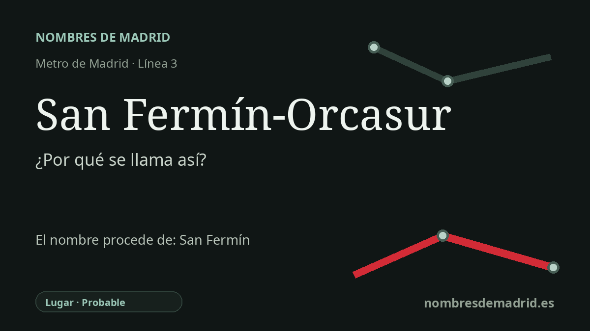

Publicado el · Investigación de Nombres de Madrid · Cómo verificamos cada origen · 9 fuentes consultadas
Respuesta rápida
San Fermín-Orcasur toma su nombre de los dos barrios de Usera a los que da servicio. San Fermín conserva la dedicación navarra dada a una colonia de posguerra, mientras que Orcasur procede del ámbito meridional de Orcasitas remodelado a finales del siglo XX.
La historia del nombre
San Fermín-Orcasur no es el nombre de un único pueblo antiguo, parroquia o finca. Es un nombre compuesto de Metro que une dos lugares vecinos de Usera: San Fermín y Orcasur. La estación se abrió el 21 de abril de 2007 dentro de la ampliación hacia el sur de la línea 3, concebida para mejorar el acceso de varios barrios del sur de Madrid.
La parte San Fermín procede de la Colonia San Fermín. Los relatos locales relacionan ese nombre con Federico Mayo Gayarre, pamplonés y primer director del Instituto Nacional de la Vivienda, que dirigió la política de vivienda de posguerra durante el franquismo. La huella navarra de la colonia sigue viéndose en nombres cercanos de calles como Estafeta, Elizondo, Oteiza o Lecumberri.
El santo que hay detrás de esa denominación local es San Fermín, muy asociado con Pamplona y Navarra. Conviene corregir que San Fermín no es simplemente 'el patrón de Navarra' en solitario: fuentes oficiales navarras presentan a San Fermín y San Francisco Javier como copatronos del antiguo Reino de Navarra desde 1657. En Madrid, el nombre religioso llegó por una decisión de vivienda y callejero del siglo XX, no por una ermita medieval.
La parte Orcasur es más urbanística que devocional. La guía de arquitectura del COAM describe Orcasur como resultado de la remodelación de tres poblados del Instituto Nacional de la Vivienda: el Poblado Mínimo de Orcasitas, el Poblado de Absorción de Orcasitas y el Poblado Agrícola. Esa historia explica por qué Orcasur está unido a Orcasitas aunque hoy sea un barrio administrativo con identidad propia.
El origen más antiguo de Orcasitas está peor documentado en fuentes abiertas. La tradición toponímica madrileña de Isabel Gea, repetida en blogs locales, afirma que Orcasitas procede de Pedro Orcasitas, dueño de gran parte de los terrenos; otras fuentes vinculan la familia Horcasitas/Orcasitas con Arcentales, en Vizcaya. Esos datos de apellido son plausibles, pero deberían comprobarse en la obra impresa de Gea y en documentación de propiedad antes de mostrarlos como seguros.